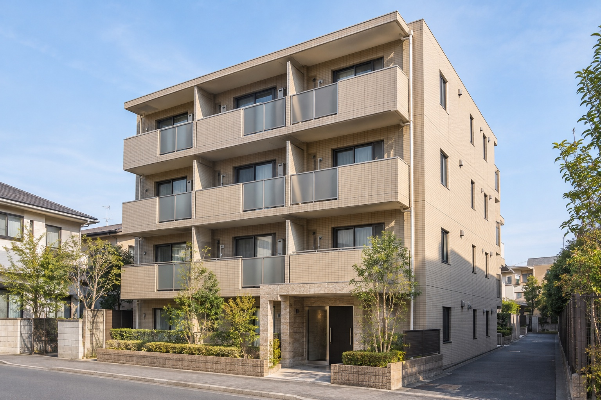
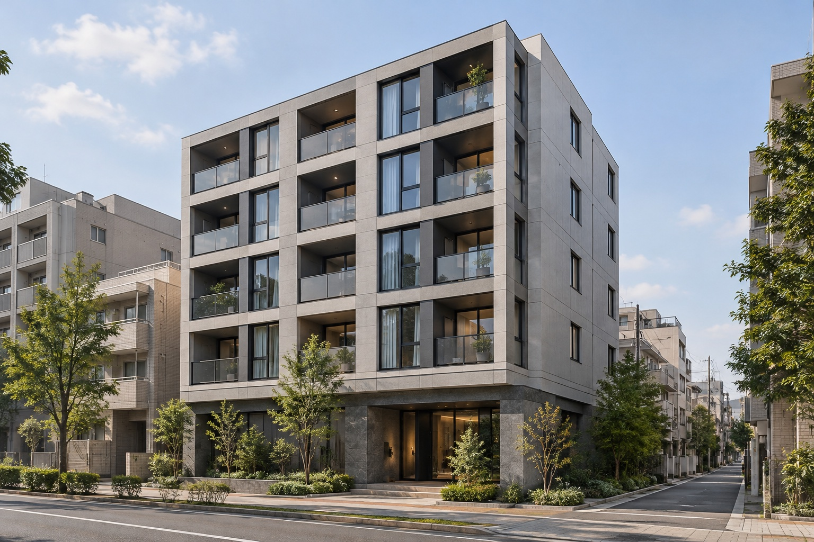
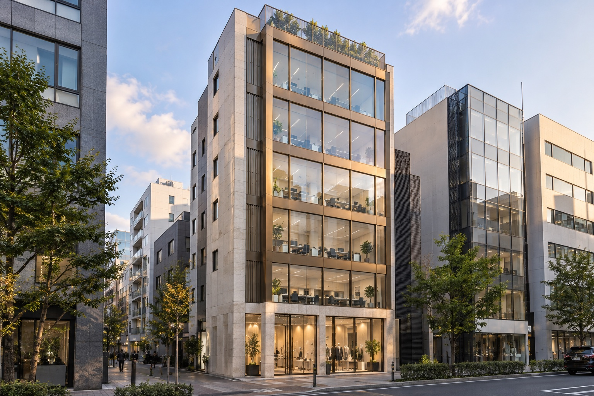

INCOME PROPERTY5億円以下
01 物件名
穏やかな住宅地に立つ、一棟賃貸マンションを想定したモデルケース。価格・面積・利回りを並べて比較するためのサンプルです。
- 価格例
- 3億2,000万円
- 表面利回り（想定）
- 6.0％
- 土地面積例
- 430.0㎡
- 延床面積例
- 980.0㎡
DEMO-01 · 架空のモデルケース
物件詳細を見るINCOME PROPERTY COLLECTION
価格・利回り・土地面積・延床面積とともに、収益不動産をご紹介します。
各価格帯の新着物件を掲載。以下の名称・価格・面積・利回りは、すべて架空のサンプル設定です。

INCOME PROPERTY5億円以下
穏やかな住宅地に立つ、一棟賃貸マンションを想定したモデルケース。価格・面積・利回りを並べて比較するためのサンプルです。
DEMO-01 · 架空のモデルケース
物件詳細を見る
INCOME PROPERTY5億円〜8億円
都市部の街並みに馴染む、一棟賃貸マンションを想定したモデルケース。賃貸需要や管理の背景も検討するためのサンプルです。
DEMO-02 · 架空のモデルケース
物件詳細を見る
INCOME PROPERTY8億円以上
ガラスと石材の外観を持つ、都心の収益ビルを想定したモデルケース。テナント構成や収支を比較するためのサンプルです。
DEMO-03 · 架空のモデルケース
物件詳細を見る表面利回り（想定）は、年間賃料収入÷物件価格×100で算出する費用控除前の指標です。管理費・税金・修繕費等を含まず、将来の収益を保証しません。数値は架空の設定です。